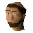

Father Aereck

| Config name | father_aereck |
| NPC id | 456 |
| Combat level | hidden |
| Options | Talk-to |
| Wander range | 5 tiles from spawn |
| Movement | indoors |
| Area folder | area_lumbridge |
| Defined in | scripts/areas/area_lumbridge/configs/lumbridge.npc |
Father Aereck
Looks a bit holy.
Show all 1 spawn on the world map → Open in knowledge graph →
Locations
| Area | Coordinates | Level | Count | Map |
|---|---|---|---|---|
| Toll Gate | 3244, 3206 | 0 | 1 | view |
Dialogue
Father AereckWelcome to the church of holy Saradomin.
PlayerWho's Saradomin?
Father AereckSurely you have heard of the god, Saradomin?
Father AereckHe who creates the forces of goodness and purity in this world? I cannot believe your ignorance!
Father AereckThis is the God with more followers than any other!.. At least in this part of the world.
Father AereckHe who created this world along with his brothers Guthix and Zamorak?
PlayerOh, THAT Saradomin...
Father AereckThere... is only one Saradomin...
PlayerOh, sorry. I'm not from this world.
Father Aereck...
Father AereckThat's... strange.
Father AereckI thought things not from this world were all slime and tenticles.
PlayerYou don't understand. This is a computer game!
Father AereckI... beg your pardon?
PlayerNever mind.
PlayerI am - do you like my disguise?
Father AereckAargh! Begone foul creature from another dimension!
PlayerOk, ok, I was only joking...
PlayerNice place you've got here.
Father AereckIt is, isn't it? It was built over 230 years ago.
PlayerI'm looking for a quest.
Father AereckThat's lucky, I need someone to do a quest for me.
PlayerOk, let me help then.
Father AereckThank you. The problem is, there is a ghost in the church graveyard: I would like you to get rid of it.
Father AereckIf you need any help, my friend Father Urhney is an expert on ghosts.
Father AereckI believe he is currently living as a hermit. He has a little shack somewhere in the swamps south of here. I'm sure if you told him that I sent you he'd be willing to help.
Father AereckMy name is Father Aereck by the way. Pleased to meet you.
PlayerLikewise.
Father AereckTake care travelling through the swamps, I have heard they can be quite dangerous.
PlayerI will, thanks.
Father AereckSorry, I only had the one quest.
Father AereckHave you got rid of the ghost yet?
PlayerI can't find Father Urhney at the moment.
Father AereckWell, to get to the swamp he is in you need to go round the back of the castle. The swamp is on the otherside of the fence to the south.
Father AereckYou'll have to go through the wood to the west to get round the fence. Then you'll have to go right into the eastern depths of the swamp.
PlayerI had a talk with Father Urhney. He has given me this funny amulet to talk to the ghost with.
Father AereckI always wondered what that amulet was... Well, I hope it's useful. Tell me when you get rid of the ghost!
PlayerI've found out that the ghost's corpse has lost its skull. If I can find the skull the ghost will go.
Father AereckThat WOULD explain it.
Father AereckHmmmmm. Well, I haven't seen any skulls.
PlayerYes, I think a warlock has stolen it.
Father AereckI hate warlocks.
Father AereckAh well, good luck!
PlayerWell, I found the ghost's skull but then lost it.
Father AereckDon't worry, I'm sure you'll find it again.
PlayerI've finally found the ghost's skull!
Father AereckGreat! Put it in the ghost's coffin and see what happens!
Referenced in scripts
scripts/areas/area_lumbridge/scripts/father_aereck.rs2